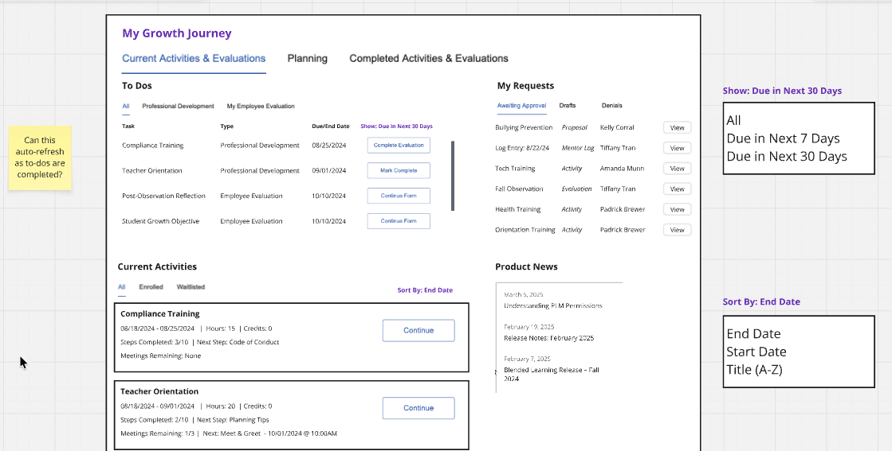

Designing Home


The Brief
My Growth Journey was the primary landing experience for Frontline's K–12 professional learning platform. Despite being the front door to the system, it had been built without foundational user research and had become a source of friction — scattering critical actions, progress indicators, and approvals across multiple pages while users just wanted to get in, see what needed attention, and get out.
Outcome
Concept validation produced unanimous positive responses across three districts. One district's Director of Professional Learning said she would update her staff onboarding to direct teachers to Home rather than the Learning Plan — the page she had explicitly trained her entire staff to use. That's a concrete behavioral signal: a decision-maker was ready to change her organizational workflows around a wireframe.
The project was in active development at the time of my departure. New component patterns I contributed were approved as reusable React components, extending the impact across the broader platform.
What I Did
- Identified the landing experience as the highest-impact opportunity and made the case to leadership
- Synthesized existing ODI research into a design direction
- Led the redesign from wireframes through high-fidelity specs
- Facilitated client validation sessions across three districts
- Contributed new reusable components to the design system
Methods
- Opportunity scoring / prioritization
- Research synthesis
- Low-fidelity wireframes
- High-fidelity mockups
- Client validation interviews
- Design system contribution
Identifying the Opportunity
This project didn't start with a brief — it started with a signal I helped interpret. Our NPS scores consistently flagged navigation as a pain point, and when the product manager asked the team where we should focus, I recommended the landing experience as the place where we could make the biggest impact with the least development effort.
The product manager had previously conducted ODI research across our user base. I connected that signal with the NPS findings to frame a design direction: the landing experience needed to shift from a passive feature hub to an active orientation and triage surface.
The Problem
The existing dashboard failed users in three connected ways.
No orientation at login. Users entered the system with urgency — teachers checking evaluation status, evaluators looking for pending reviews, administrators tracking compliance — but nothing answered their most basic questions: What do I need to do right now? What's waiting on someone else? The inherited experience organized itself around a reflective metaphor — "Where I've Been / Where I Am Now / Where I'm Going" — that didn't match how anyone actually used the system. Nobody logged in to reflect. The mental model was task management, and the mismatch meant the most prominent element on the page was the least useful.
Hidden workflow complexity. Multi-step workflows were abstracted behind generic states like "Pending." Progress, ownership, and deadlines weren't visible, so users couldn't tell whether they were waiting on someone else, whether something was overdue, or whether the system was working as expected.
Platform fragmentation. The dashboard duplicated information across surfaces without clear logic, increasing cognitive load and leaving users unsure where to act. It was also built in Angular while the platform was migrating to React, meaning any investment in the existing experience had limited longevity.
Gathering Insights
Outcome Driven Innovation interviews. The previous version of the dashboard had been envisioned based on institutional knowledge from internal stakeholders in Support and Implementation. To reset our understanding, the product manager conducted ODI interviews to get to the reality of how end users actually managed their professional development.
My Growth Journey organized itself around a reflective metaphor that didn't match how anyone actually used the system. Nobody logged in to reflect. When they logged in, they were disoriented.
Logging professional development was so painful it was costing teachers money. One participant had completed roughly 90 hours of professional development and logged none of it, and the consequence was a missed pay raise. They stopped believing the effort to document it was proportional to the benefit.
"Waiting on someone else" is an important state to represent. Another anxiety common across participants was: I don't know if I need to do something or if an administrator does. One participant described spending months re-clicking completed items because she couldn't distinguish her action items from items pending approval. Surfacing ownership in the design could be a strong lever to ease that pain.
Page analytics. Analytics confirmed what the interviews suggested: users were skipping the MGJ dashboard entirely and going straight to the Learning Plan, a legacy page that was dated but at least more straightforward. The dashboard wasn't even on the path.
NPS data. Professional Growth had the lowest NPS of all seven products in Frontline's surveys. Ease of use was the top reason for detractor scores — more than features, integration, or customer service. The verbatims were unambiguous: users couldn't find what they were looking for and had to relearn the navigation every year.
Professional Growth NPS: −12.7 — lowest of all 7 products surveyed.
Ease of use was the #1 detractor driver with 34 mentions — more than features, integration, or customer service.
Information Architecture
The four-branch journey metaphor (Where I've Been / Where I Am Now / Where I'm Going / How I Get There) mapped to how the system was built, not how users thought about their work. I audited the existing IA to understand exactly what was being organized under each branch and where the mismatch was.

The ODI finding that was most consequential to the IA: all five interview participants found professional development through entirely external channels — word of mouth, administrator emails, district-wide announcements — never through the platform's "How I Get There" panel. That branch existed to surface recommendations the system never surfaced. Removing it wasn't a loss; it was an honest acknowledgment of how the platform was actually used.

Design Process
Low-fidelity wireframes. I restructured the landing experience around user intent rather than system structure — organizing content by urgency: what needs action now at the top, in-progress work in the middle, secondary content accessible but visually deprioritized.

Concept validation. I facilitated interviews with clients across three districts to validate the direction. Participants immediately understood the to-do panel without explanation and responded to action-specific CTAs as a direct solution to a problem they'd been living with.
"The box tells you exactly what I need to do. I don't have to look for it."
First-grade teacher · ODI interview participant who saw both versionsA district PD director described the to-do section as "phenomenal" and said it would help staff "not need to dig too deep." A digital learning specialist called the current experience "information overload" and the redesign "really focused" — unprompted. Sessions also surfaced useful refinements: separating upcoming from active items in Current Activities, and showing locked to-do items with an availability date rather than hiding them — both of which informed subsequent iterations.
Information hierarchy. The key design challenge was prioritizing urgent content without hiding secondary information. I proposed a visual treatment using background color to create hierarchy within the tiled layout. Primary tiles — To Do and Current Activities — sat on white card backgrounds. Secondary tiles — My Requests, Meetings, What's New — used the page's gray background, appearing "set back" from the primary content. The effect created a clear scannable hierarchy without fragmenting the layout.
Design system contribution. I worked with the design system lead to review my proposals. He steered me toward existing components where they solved the problem, keeping the system lean — but agreed that the "set back" tile treatment and several new patterns I proposed were valuable additions. These were approved as reusable React components available to other product teams across the platform.
Key Design Decisions
Orientation over navigation. Home answers the user's first questions on arrival — What needs my attention? Where am I in longer workflows? — rather than linking out to features.
Task language over system language. Abstract states like "Pending" were replaced with task-based language that made progress and ownership explicit — helping users trust the system rather than second-guess it.
Evidence-based scope reduction. Removing the "How I Get There" panel wasn't a simplification for its own sake — it was justified by the ODI finding that all five participants found professional development through entirely external channels. The panel was answering a question users weren't asking.
Outcome
Concept validation across three districts produced unanimous positive responses. One district's Director of Professional Learning said she would update her staff onboarding documentation to direct teachers to Home rather than the Learning Plan — the page she had explicitly trained her entire staff to use. That's a concrete behavioral signal: a decision-maker was ready to change her organizational workflows around a wireframe.
A digital learning specialist described the redesign as something that would "build a habit" of task completion — articulating the intended behavior change without being prompted.
The project was in active development at the time of my departure. The new component patterns I contributed were approved as reusable React components, extending the impact of this work across the broader platform.